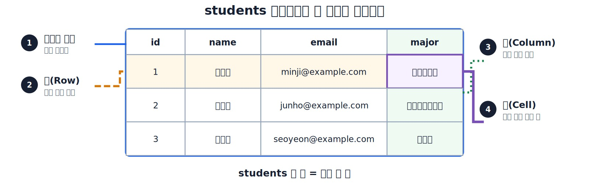
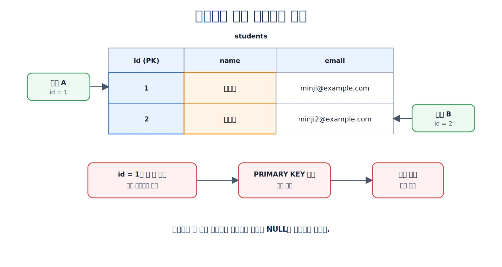
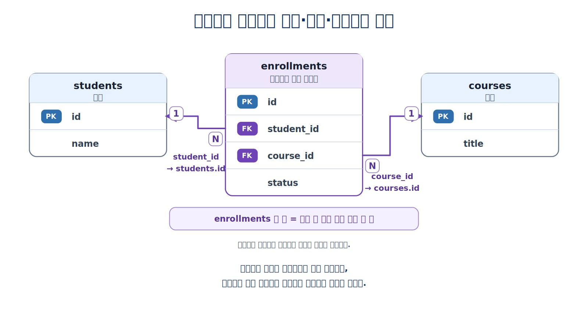
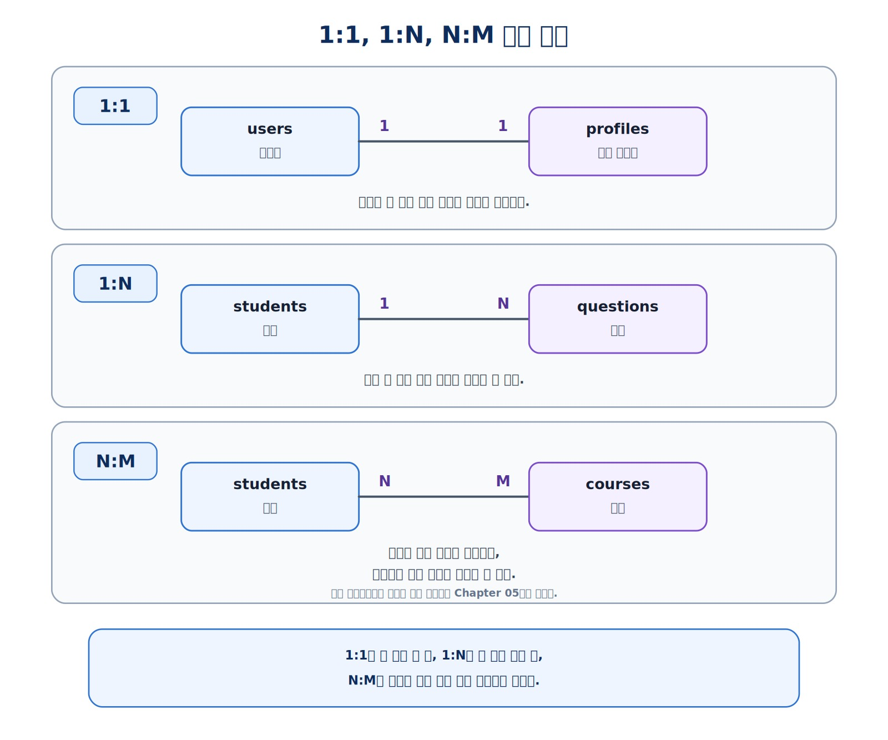
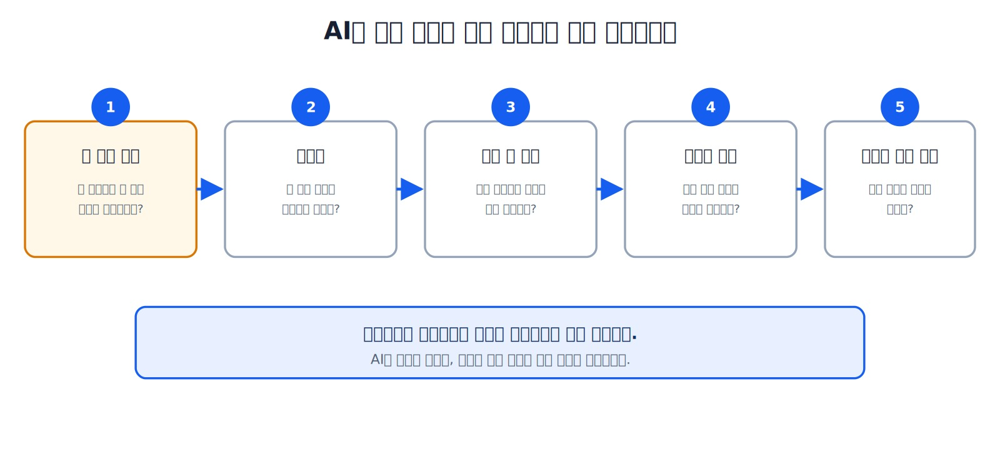

데이터와 DBMS의 기본 개념
SQL을 제대로 이해하려면 명령어보다 먼저 데이터가 어디에 저장되고, DBMS가 무엇을 관리하며, 서버·데이터베이스·스키마·테이블·행과 열이 어떻게 이어지는지를 정확히 구분할 수 있어야 합니다.
그리고 한 행은 정확히 무엇을 의미하는가?
이 장을 시작하기 전에
이 장은 데이터베이스를 처음 배우는 독자를 대상으로 합니다. Chapter 01의 내용을 읽었다면 별도의 선수 지식은 필요하지 않습니다.
이 장에 나오는 SQL과 테이블은 데이터베이스 구조와 용어를 이해하기 위한 축약 예제입니다. 실제 PostgreSQL 환경은 Chapter 03에서 준비하고, 테이블 생성과 데이터 입력·조회·수정·삭제는 Chapter 04에서 시작합니다.
이 책에서는 PostgreSQL을 기준으로 설명합니다. 다른 DBMS에서는 데이터베이스와 스키마의 사용 방식이나 명칭이 다를 수 있습니다.
이 장에서 살펴볼 내용
Chapter 01에서는 AI가 SQL과 데이터베이스 초안을 만들어 주더라도 사람이 데이터 구조와 실행 결과를 이해하고 검증해야 하는 이유를 살펴보았습니다.
이번 장에서는 다음 흐름을 정확한 용어로 읽는 방법을 배웁니다.
사용자
→ DBeaver와 같은 클라이언트
→ PostgreSQL DBMS
→ 데이터베이스
→ 스키마
→ 테이블
→ 행과 열
이 장을 마치면
다음 내용을 자신의 말로 설명할 수 있습니다.
- 데이터, 데이터베이스와 DBMS의 차이
- DBeaver와 PostgreSQL의 역할
- 서버·데이터베이스·스키마·테이블의 포함 관계
- 테이블의 행·열·셀과 한 행의 의미
- 테이블과 조회 결과가 서로 다른 이유
- 내부 식별자와 업무 식별자의 차이
- 기본키와 외래키의 역할
- 조회 결과의 순서가 자동으로 보장되지 않는 이유
- AI가 만든 테이블 구조에서 먼저 확인해야 할 항목
학습 표시
- 핵심 학습: 처음 배우는 독자가 우선 이해할 내용
- 선택 학습: 필요하거나 관심이 있을 때 추가로 살펴볼 내용
- 심화 학습: 운영과 실무 확장을 위한 내용
선택·심화 학습을 모두 완료하지 않아도 다음 장으로 진행할 수 있습니다.
1. 데이터베이스 안에는 무엇이 있을까
온라인 강의 서비스를 생각해 보겠습니다. 기본 서비스에는 학생, 강사, 강의와 수강신청 데이터가 필요합니다.
학생
강사
강의
수강신청
신청 상태
신청 당시 기록 금액
관계형 데이터베이스는 관련 데이터를 테이블에 나누어 저장하고 키와 제약조건을 사용해 데이터의 의미와 연결을 관리합니다.
테이블의 한 행은 하나의 기록을 나타낸다.
열은 기록을 구성하는 항목을 나타낸다.
기본키는 자신의 테이블에서 행을 구분한다.
외래키는 참조 대상 키와 연결된다.
DBMS는 데이터를 저장·조회하고 설정된 규칙을 적용한다.
이 흐름을 이해하면 SQL을 읽을 때 명령어만 보는 것이 아니라 어떤 구조의 데이터를 대상으로 무엇을 처리하는지 함께 판단할 수 있습니다.
2. 데이터, 데이터베이스와 DBMS
2.1 데이터란 무엇인가
데이터는 관찰하거나 기록한 값이나 사실입니다.
| 데이터 예시 | 나타내는 의미 |
|---|---|
| 김민지 | 학생 이름 |
| 1 | 데이터베이스 내부에서 학생 행을 구분하는 id |
| 20260001 | 업무에서 사용하는 학번 |
| 데이터베이스 입문 | 강의 제목 |
| 2026-03-02 | 수강신청일 |
| 신청 | 수강신청 상태 |
여러 값이 연결되면 하나의 업무 사실을 표현할 수 있습니다.
학번 20260001인 김민지 학생이
2026년 3월 2일에
데이터베이스 입문 강의를 신청했다.
2.2 데이터베이스란 무엇인가
데이터베이스(Database)는 관련 데이터를 일정한 구조로 저장하고 관리하는 논리적 공간입니다.
이 책에서는 Chapter 03에서 ai_database_book 데이터베이스를 만듭니다. Chapter 04에서는 public.students 테이블을 생성하고, Chapter 07에서는 course_project 스키마에 학생·강사·강의·수강신청 테이블을 구성합니다.
2.3 DBMS란 무엇인가
DBMS(Database Management System)는 데이터베이스를 생성하고 관리하며 사용할 수 있게 해 주는 소프트웨어입니다.
| 역할 | 설명 |
|---|---|
| 저장 | 데이터를 일정한 구조로 보관 |
| 조회 | 조건에 맞는 데이터를 검색 |
| 규칙 적용 | 잘못된 값과 참조를 제한 |
| 동시 처리 | 여러 사용자의 작업을 조정 |
| 보호 | 사용자와 역할별 접근 권한 관리 |
| 복구 지원 | 백업과 장애 복구에 필요한 기능 제공 |
대표적인 관계형 DBMS에는 PostgreSQL, MySQL, MariaDB, Oracle Database, SQL Server와 SQLite가 있습니다. 이 책에서는 PostgreSQL을 기본 환경으로 사용합니다.
SQLite도 관계형 DBMS이지만 PostgreSQL과 운영 방식이 다릅니다. PostgreSQL은 일반적으로 별도의 서버 프로세스에 접속해 사용하고, SQLite는 애플리케이션이 데이터베이스 파일을 직접 사용하는 임베디드 방식으로 많이 사용합니다.
2.4 세 용어의 차이
| 구분 | 의미 | 예시 |
|---|---|---|
| 데이터 | 기록된 개별 값이나 사실 | 이름, 학번, 신청일 |
| 데이터베이스 | 관련 데이터가 저장되는 논리적 공간 | ai_database_book |
| DBMS | 데이터베이스를 관리하고 SQL을 실행하는 소프트웨어 | PostgreSQL |
일상에서는 데이터베이스와 DBMS를 모두 ‘DB’라고 부르기도 합니다. 그러나 설치, 연결과 오류를 이해하려면 두 개념을 구분해야 합니다.
3. 클라이언트와 DBMS는 어떻게 연결되는가
DBeaver를 설치하면 데이터베이스가 설치되는 것으로 오해하기 쉽습니다. DBeaver와 PostgreSQL은 역할이 다릅니다.
| 구성 요소 | 역할 |
|---|---|
| 사용자 | 해결할 질문을 정하고 결과를 판단 |
| DBeaver | PostgreSQL에 접속해 SQL을 보내고 결과를 보여 주는 클라이언트 |
| PostgreSQL | 데이터를 저장하고 SQL을 실행하는 DBMS |
| SQL | 클라이언트가 DBMS에 전달하는 명령 언어 |
사용자가 DBeaver에서 SQL 작성
→ DBeaver가 SQL을 PostgreSQL에 전달
→ PostgreSQL이 SQL 실행
→ PostgreSQL이 결과 또는 오류 반환
→ DBeaver가 결과를 화면에 표시
DBeaver는 여러 데이터베이스 클라이언트 중 하나입니다. PostgreSQL의 명령줄 도구인 psql, Python 프로그램, 웹 애플리케이션과 다른 개발 도구도 DBMS의 클라이언트가 될 수 있습니다.
DBeaver를 종료해도 PostgreSQL 서버와 데이터 저장소가 정상이라면 데이터는 유지됩니다. 반대로 DBeaver가 실행 중이어도 PostgreSQL 서버가 중지되어 있거나 연결 정보가 잘못되면 접속할 수 없습니다.
이 장의 클라이언트–서버 구조는 PostgreSQL을 기준으로 설명합니다. SQLite처럼 별도의 서버 없이 사용하는 DBMS는 연결 방식이 다릅니다.
4. PostgreSQL의 기본 계층
PostgreSQL에서 데이터를 탐색할 때는 다음 계층을 이해해야 합니다.
PostgreSQL 서버
└── 데이터베이스
└── 스키마
└── 데이터베이스 객체
├── 테이블
├── 뷰
├── 시퀀스
└── 함수
이번 장에서는 데이터베이스 객체 중 테이블을 중심으로 살펴봅니다. 뷰와 다른 객체는 필요한 장에서 다시 다룹니다.
이 책에서 구조가 만들어지는 순서는 다음과 같습니다.
PostgreSQL 서버
└── ai_database_book Chapter 03
├── public
│ └── students Chapter 04
└── course_project Chapter 07
├── students
├── instructors
├── courses
└── enrollments
Chapter 02에서 사용하는 학생·강의·수강신청 표는 개념을 설명하기 위한 축약 예제입니다. 실제 객체는 각 장의 실습 순서에 따라 단계적으로 생성합니다.
4.1 서버
이 책에서는 PostgreSQL DBMS가 실행되는 하나의 인스턴스를 이해하기 쉽게 PostgreSQL 서버라고 부릅니다. 로컬 PC에서 실행하든 원격 환경에서 실행하든 같은 계층 구조로 이해할 수 있습니다. 한 PostgreSQL 서버에서는 여러 데이터베이스를 관리할 수 있습니다.
4.2 데이터베이스
업무나 프로젝트별 데이터를 분리하는 논리적 공간입니다. 한 PostgreSQL 서버 안에 여러 데이터베이스가 존재할 수 있습니다.
4.3 스키마
스키마(Schema)는 데이터베이스 안에서 테이블과 같은 객체를 이름으로 구분해 관리하는 이름 공간입니다.
PostgreSQL에서는 다음처럼 스키마.테이블 형식으로 대상을 분명하게 지정할 수 있습니다.
public.students
course_project.students
스키마 이름을 생략하면 PostgreSQL은 검색 경로에 따라 대상을 찾습니다. 현재 데이터베이스, 스키마와 검색 경로를 실제로 확인하는 SQL은 Chapter 03에서 실행합니다.
4.4 다른 DBMS와의 차이
이 책의 계층과 용어는 PostgreSQL을 기준으로 합니다. MySQL, SQLite와 다른 DBMS에서는 데이터베이스와 스키마의 의미 또는 사용 방식이 다를 수 있습니다. 다른 제품을 사용할 때는 해당 DBMS의 문서를 함께 확인해야 합니다.
5. 테이블, 행, 열, 셀과 조회 결과
학생 정보를 저장하는 students 테이블을 살펴보겠습니다.
| id | name | major | |
|---|---|---|---|
| 1 | 김민지 | minji@example.com | 컴퓨터공학 |
| 2 | 이준호 | junho@example.com | 데이터사이언스 |
| 3 | 박서연 | seoyeon@example.com | 경영학 |

그림 2-1 테이블, 행, 열과 셀의 구조
5.1 테이블과 한 행의 의미
표 전체가 하나의 테이블입니다. students 테이블의 한 행은 학생 한 명을 나타냅니다.
students 한 행 = 학생 한 명
한 행이 무엇을 의미하는지 명확하게 정하는 것이 좋은 데이터 구조의 출발점입니다.
5.2 행
행(Row)은 하나의 기록입니다. 행은 레코드(Record) 또는 튜플(Tuple)이라고도 부르지만 이 책에서는 주로 행이라는 표현을 사용합니다.
표에 표시된 첫째·둘째·셋째 행의 순서는 설명을 위한 예시입니다. 테이블 자체에 업무적으로 보장된 행 순서가 있다고 가정하지 않으며, 조회 결과도 ORDER BY로 정렬 기준을 지정하지 않으면 순서가 보장되지 않습니다.
5.3 열
열(Column)은 기록을 구성하는 데이터 항목입니다.
id
name
email
major
모든 행은 같은 열 구조를 사용하지만 각 행에 저장된 값은 다릅니다.
5.4 셀
셀(Cell)은 표를 이해하기 위한 편의적 표현으로 특정 행과 열이 만나는 하나의 값을 뜻합니다. SQL에서는 화면상의 위치로 값을 찾지 않고 행을 찾는 조건과 열 이름을 사용합니다.
5.5 테이블과 조회 결과는 다르다
테이블은 데이터를 저장하는 구조입니다. SELECT 결과는 SQL을 실행해 만들어진 결과 집합(Result Set)입니다.
테이블
→ 데이터를 저장하는 구조
조회 결과
→ SQL의 조건·연결·계산에 따라 만들어진 결과
조회 결과가 화면에서 표처럼 보이더라도 원본 테이블과 같은 것은 아닙니다. 여러 테이블을 연결하거나 일부 열만 선택하고 계산한 값도 하나의 조회 결과로 표시할 수 있습니다.
6. 데이터 타입 미리보기
각 열은 저장할 값의 종류를 나타내는 데이터 타입을 가집니다.
| 데이터 종류 | 예시 |
|---|---|
| 정수 | 내부 id, 수량 |
| 문자열 | 이름, 이메일, 상태, 학번 |
| 날짜·시간 | 가입일, 신청일 |
| 불리언 | 활성 여부, 완료 여부 |
학번은 숫자로만 보이더라도 계산을 위한 값이 아니며 앞자리 0이 필요할 수 있으므로 문자열로 저장하는 경우가 많습니다.
데이터 타입을 선택할 때는 다음 질문을 확인합니다.
이 값은 계산하는 값인가?
앞자리 0을 보존해야 하는가?
날짜나 시각 연산이 필요한가?
값의 허용 범위가 정해져 있는가?
값의 겉모양만 보고 타입을 결정하지 않고 업무에서 어떻게 사용하는지도 함께 고려해야 합니다. 데이터 타입은 저장할 값의 큰 범위를 정하고, 더 구체적인 업무 규칙은 제약조건으로 보완할 수 있습니다. PostgreSQL의 구체적인 데이터 타입과 변환 방법은 Chapter 04, 제약조건은 Chapter 06에서 다룹니다.
선택 학습: 데이터의 구조 유형
- 정형 데이터: 행·열과 데이터 타입이 명확한 데이터
- 반정형 데이터: JSON처럼 키와 계층 구조를 가진 데이터
- 비정형 데이터: 문서·이미지·음성·영상처럼 고정된 행과 열로 표현하기 어려운 데이터
이 구분이 곧 저장소의 종류를 의미하는 것은 아닙니다. JSON도 PostgreSQL에 저장할 수 있으며, 구체적인 저장 방식 선택은 Chapter 12에서 살펴봅니다.
7. 내부 식별자와 업무 식별자
학생 데이터에는 id와 학번이 함께 존재할 수 있습니다.
id = 1
→ 데이터베이스 내부에서 행을 안정적으로 구분하는 내부 식별자
student_number = 20260001
→ 학교 업무에서 부여한 업무 식별자
| 구분 | 목적 | 예시 |
|---|---|---|
| 내부 식별자 | DB 내부에서 행을 안정적으로 구분 | students.id |
| 업무 식별자 | 현실의 업무에서 대상을 식별 | 학번, 회원번호, 주문번호 |
업무 식별자는 정책에 따라 형식이나 발급 규칙이 바뀔 수 있습니다. 내부 식별자와 업무 식별자가 항상 같은 것은 아닙니다.
자연키·대체키와 같은 상세 설계 용어는 Chapter 05~06에서 다시 살펴봅니다.
8. 기본키와 외래키
8.1 기본키
기본키(Primary Key, PK)는 한 테이블 안에서 각 행을 고유하게 구분하는 하나 이상의 열입니다. 초반 실습에서는 이해하기 쉬운 단일 id 열을 기본키로 사용합니다.
| id | name | |
|---|---|---|
| 1 | 김민지 | minji@example.com |
| 2 | 김민지 | minji2@example.com |
두 학생의 이름은 같지만 id가 다르므로 서로 다른 행으로 구분할 수 있습니다.

그림 2-2 기본키가 행을 구분하는 방식
기본키 값 또는 값의 조합은 중복되지 않는다.
기본키를 구성하는 열은 NULL일 수 없다.
각 행을 안정적으로 구분한다.
여러 열을 묶어 행을 구분하는 복합 기본키는 Chapter 06에서 다룹니다.
8.2 외래키
외래키(Foreign Key, FK)는 다른 테이블 또는 같은 테이블의 참조 대상 키와 연결되는 하나 이상의 열입니다. 이 책의 초급 예제에서는 다른 테이블의 기본키를 참조하는 경우를 중심으로 살펴봅니다.
| id | student_id | course_id | status |
|---|---|---|---|
| 1 | 1 | 10 | 신청 |
| 2 | 1 | 20 | 수강중 |
| 3 | 2 | 10 | 완료 |
student_id는 students.id를 참조하고 course_id는 courses.id를 참조합니다.

그림 2-3 외래키로 연결되는 학생·강의·수강신청 관계
기본키
→ 자신의 테이블에서 행을 구분
외래키
→ 참조 대상 키와의 연결을 표현
외래키 제약조건
→ 존재하지 않는 참조가 저장되지 않도록 검사
외래키와 관련해 다음 차이를 기억해야 합니다.
외래키 값은 여러 행에서 반복될 수 있다.
외래키는 자동으로 UNIQUE가 되지 않는다.
외래키 열은 별도의 NOT NULL 규칙이 없으면 NULL을 허용할 수 있다.
외래키만으로 필수 관계나 1:1 관계가 자동 완성되지는 않는다.
예제에서 학생 1은 두 강의를 신청하므로 student_id = 1이 반복됩니다. 이는 정상적인 1:N 관계입니다.
외래키 위치, 복합 키, 필수 관계와 삭제 정책은 Chapter 05~06에서 자세히 다룹니다.
9. 업무 관계와 카디널리티 미리보기
업무 대상은 서로 연결됩니다.
학생 → 질문
회원 → 주문
학생 → 수강신청 → 강의
카디널리티(Cardinality)는 한쪽의 한 행이 상대편의 몇 행과 연결될 수 있는지를 나타내는 관계의 수입니다. Chapter 02에서는 먼저 1:1, 1:N, N:M처럼 최대 연결 수를 중심으로 읽습니다. 연결 대상이 0개여도 되는지와 같은 선택·필수 여부는 별도의 업무 규칙입니다.
| 관계 유형 | 의미 | 예시 |
|---|---|---|
| 1:1 | 한 행이 상대편의 최대 한 행과 연결 | 사용자와 하나의 상세 프로필 |
| 1:N | 한 행이 상대편의 여러 행과 연결 | 학생과 질문 |
| N:M | 양쪽의 여러 행이 서로 연결 | 학생과 강의 |

그림 2-4 업무 관계의 카디널리티 미리보기
N:M 관계는 일반적으로 enrollments 같은 연결 테이블을 두어 두 개의 1:N 관계로 표현합니다.
students 1 ── N enrollments N ── 1 courses
실제 업무에서는 최대 연결 수뿐 아니라 0개를 허용하는지, 반드시 하나 이상이 필요한지도 별도로 결정해야 합니다. 이러한 선택·필수 관계와 연결 테이블을 실제로 설계하는 방법은 Chapter 05에서 다룹니다.
선택 학습: 릴레이션과 업무 관계
관계형 데이터베이스의 릴레이션(Relation)은 관계 모델에서 행과 열로 구성된 구조를 뜻합니다. 학생이 강의를 신청한다는 업무 관계(Relationship)와는 구분해서 이해하는 것이 좋습니다.
Chapter 02에서는 용어의 차이만 이해하고 관계 모델의 이론적 정의는 깊게 다루지 않습니다.
10. DBMS가 데이터를 지키는 방법
DBMS는 데이터를 저장하는 기능뿐 아니라 잘못된 상태를 줄이고 안전하게 운영하기 위한 기능도 제공합니다.
10.1 제약조건
제약조건(Constraint)은 저장할 수 있는 값과 참조에 대한 규칙입니다.
학생 이름은 NULL일 수 없다.
이메일은 중복될 수 없다.
존재하지 않는 학생의 수강신청은 저장할 수 없다.
상품 가격은 0보다 작을 수 없다.
대표적인 제약조건에는 PRIMARY KEY, FOREIGN KEY, NOT NULL, UNIQUE, CHECK가 있습니다. NOT NULL은 NULL을 막는 규칙이며 빈 문자열 자체를 막는 규칙은 아닙니다. 빈 문자열까지 제한해야 한다면 별도의 규칙이 필요합니다. 실제 제약조건 SQL은 Chapter 06에서 다룹니다.
10.2 동시 처리
여러 사용자가 동시에 같은 좌석이나 재고를 변경하면 작업이 충돌할 수 있습니다. DBMS는 트랜잭션과 동시성 제어 기능으로 여러 작업을 조정합니다. 자세한 내용은 Chapter 09에서 다룹니다.
10.3 권한
모든 사용자가 모든 데이터를 읽고 수정할 수 있어서는 안 됩니다. DBMS는 사용자와 역할에 따라 접근 권한을 구분할 수 있습니다.
10.4 백업과 복구
DBMS는 백업과 복구에 필요한 기능을 제공하지만 데이터가 자동으로 안전해지는 것은 아닙니다. 백업을 만들고 실제로 복구할 수 있는지 확인해야 합니다. 권한, 보안, 백업과 복구는 Chapter 11에서 살펴봅니다.
11. SQL과 CRUD 미리보기
SQL(Structured Query Language)은 관계형 DBMS에 명령을 전달하는 언어입니다.
SELECT *
FROM students;
이 SQL은 students 테이블의 모든 행과 열을 조회하라는 의미입니다. 결과 순서는 ORDER BY가 없으면 보장되지 않습니다.
CRUD는 애플리케이션에서 반복되는 네 가지 기본 데이터 작업입니다.
| CRUD | 의미 | 대표 SQL |
|---|---|---|
| Create | 새로운 데이터 행 추가 | INSERT |
| Read | 저장된 데이터 조회 | SELECT |
| Update | 기존 데이터 수정 | UPDATE |
| Delete | 데이터 삭제 기능 | DELETE 또는 정책에 따른 UPDATE |
CRUD의 Create는 새로운 데이터 행을 추가하는 작업입니다. SQL의 CREATE TABLE은 데이터 행이 아니라 테이블 구조를 만드는 명령입니다.
CRUD Create → INSERT로 데이터 행 추가
CREATE TABLE → 테이블 구조 생성
서비스의 ‘삭제’ 기능도 항상 행을 물리적으로 지우는 SQL DELETE와 같지는 않습니다. 이력을 보존해야 하는 경우에는 행을 남기고 상태나 삭제 시각을 변경할 수 있습니다. 구체적인 삭제 정책은 Chapter 06과 후속 운영 장에서 살펴봅니다.
12. 하나의 사례로 구조 읽기
온라인 강의 서비스의 구조를 읽어 보겠습니다.
students
- 한 행: 학생 한 명
- 기본키: id
courses
- 한 행: 강의 한 개
- 기본키: id
enrollments
- 한 행: 수강신청 한 건
- 기본키: id
- 외래키: student_id, course_id
12.1 표로 구조 읽기
| 테이블 | 한 행이 나타내는 것 | 기본키 | 다른 테이블과의 연결 |
|---|---|---|---|
students |
학생 한 명 | id |
신청과 연결 |
courses |
강의 한 개 | id |
신청과 연결 |
enrollments |
수강신청 한 건 | id |
학생과 강의를 참조 |
12.2 구조를 읽을 때 확인할 질문
이 테이블의 한 행은 무엇을 나타내는가?
각 행을 구분하는 값은 무엇인가?
다른 테이블을 참조하는 값은 무엇인가?
같은 값이 반복되어도 되는 열은 무엇인가?
필수로 저장해야 하는 값은 무엇인가?
recorded_amount가 있다면 이는 신청 당시 저장한 금액입니다. 실제 결제 완료 금액이나 회계 매출과 같은 의미라고 단정하지 않습니다. 결제·환불의 상세 구조는 기본 범위에 포함하지 않습니다.
Chapter 01 복습
- 기준 데이터: 특정 업무 판단에서 공식 기준으로 삼는 데이터
- 파생 데이터: 기준 데이터를 계산해 만든 결과
- AI 결과: 모델과 입력·지시에 따라 생성된 결과
이번 장에서는 이 구분을 복습하는 수준으로만 다룹니다. AI 결과의 실행 맥락과 체계적인 검증은 Chapter 13에서 살펴봅니다.
13. AI가 만든 구조 검토하기
AI가 다음 구조를 제안했다고 가정하겠습니다.
CREATE TABLE student_courses (
student_name VARCHAR(50),
student_email VARCHAR(100),
course_title VARCHAR(100),
instructor_name VARCHAR(50)
);
문법적으로 테이블을 만들 수 있더라도 좋은 구조라고 단정할 수는 없습니다.
다음 다섯 질문으로 먼저 검토합니다.
1. 이 테이블의 한 행은 무엇을 나타내는가?
2. 각 행을 구분할 기본키가 있는가?
3. 다른 테이블을 참조해야 할 값은 무엇인가?
4. 서로 다른 성격의 데이터가 한 테이블에 섞이지 않았는가?
5. 데이터 타입과 필수 여부가 값의 의미에 맞는가?
| 검토 질문 | 예제에서 확인되는 문제 |
|---|---|
| 한 행의 의미 | 학생인지 신청인지 명확하지 않음 |
| 기본키 | 각 행을 안정적으로 구분할 값이 없음 |
| 참조 관계 | 학생·강의·강사를 이름 문자열로만 저장 |
| 데이터 혼합 | 학생·강의·강사 정보가 한 테이블에 섞임 |
| 타입과 필수 여부 | 필수값과 선택값을 판단할 규칙이 없음 |

그림 2-5 AI 생성 테이블 구조 검토 흐름
이 장에서는 기본 용어로 문제를 발견하는 데 집중합니다. 테이블 분리와 ERD는 Chapter 05, 정규화와 제약조건은 Chapter 06, AI 설계와 SQL의 체계적인 검증은 Chapter 13에서 다룹니다.
14. 자주 하는 오해와 스스로 확인하기
14.1 자주 하는 오해
오해 1. DBeaver가 데이터베이스이다
DBeaver는 PostgreSQL 같은 DBMS에 접속하는 클라이언트 도구입니다.
오해 2. DBMS와 데이터베이스는 같은 것이다
PostgreSQL은 DBMS이고 그 안에 만든 ai_database_book은 데이터베이스입니다.
오해 3. 스키마와 데이터베이스는 같은 것이다
PostgreSQL에서 스키마는 데이터베이스 안에 있으며 테이블과 같은 객체를 이름으로 구분합니다.
오해 4. 테이블과 SELECT 결과는 같은 것이다
테이블은 데이터를 저장하는 구조이고 조회 결과는 SQL을 실행해 만들어진 결과 집합입니다.
오해 5. 테이블의 행은 항상 같은 순서로 보인다
ORDER BY가 없으면 조회 결과의 행 순서는 보장되지 않습니다.
오해 6. 외래키는 중복될 수 없고 항상 값이 있어야 한다
외래키 값은 1:N 관계에서 반복될 수 있으며, 별도의 UNIQUE와 NOT NULL 규칙에 따라 중복과 NULL 허용 여부가 달라집니다.
오해 7. SQL이 실행되면 데이터 구조도 올바르다
DBMS는 문법적으로 유효한 SQL을 실행할 수 있지만 한 행의 의미와 업무 규칙까지 자동으로 판단하지는 않습니다.
14.2 개념 확인
- 데이터, 데이터베이스와 DBMS의 차이를 설명해 보세요.
- PostgreSQL과 DBeaver의 역할은 어떻게 다른가요?
- 데이터베이스, 스키마와 테이블의 포함 관계를 설명해 보세요.
- 테이블, 행, 열과 셀은 각각 무엇인가요?
- 테이블과 조회 결과는 어떻게 다른가요?
ORDER BY가 없을 때 행 순서를 가정하면 안 되는 이유는 무엇인가요?- 내부 식별자와 업무 식별자의 차이는 무엇인가요?
- 기본키와 외래키의 역할은 어떻게 다른가요?
- 외래키 값이 여러 행에서 반복될 수 있는 이유는 무엇인가요?
- AI가 만든 테이블에서 먼저 확인해야 할 다섯 가지는 무엇인가요?
14.3 구조 읽기
PostgreSQL 서버
└── school_db
└── public
├── students
└── questions
- DBMS는 무엇인가요?
- 데이터베이스 이름은 무엇인가요?
- 스키마 이름은 무엇인가요?
- 테이블은 몇 개인가요?
- DBeaver는 이 구조에서 어떤 역할을 하나요?
14.4 기본키와 외래키 찾기
students
id | name
1 | 김민지
2 | 이준호
questions
id | student_id | title
1 | 1 | JOIN 질문
2 | 1 | NULL 질문
3 | 2 | 기본키 질문
- 각 테이블의 기본키는 무엇인가요?
questions.student_id는 무엇을 참조하나요?student_id = 1이 반복되어도 되는 이유는 무엇인가요?- 존재하지 않는
student_id가 저장되면 어떤 문제가 생기나요?
권장 해설
- 데이터는 기록된 값이나 사실입니다.
- 데이터베이스는 관련 데이터가 저장되는 논리적 공간입니다.
- DBMS는 데이터베이스를 관리하고 SQL을 실행하는 소프트웨어입니다.
- 테이블은 데이터를 저장하고 조회 결과는 SQL이 만들어 냅니다.
- 내부
id는 행을 안정적으로 구분하고 학번과 같은 업무 식별자는 업무에서 사용합니다. - 기본키는 자신의 테이블에서 행을 고유하게 구분합니다.
- 외래키는 참조 대상 키와 연결되며 1:N 관계에서는 같은 값이 반복될 수 있습니다. 외래키 제약조건이 설정되어 있다면 존재하지 않는 참조는 DBMS가 거부합니다.
더 많은 활동은 Chapter 02 독자 워크북에서 진행합니다.
15. 핵심 정리와 다음 장
| 용어 | 한 줄 설명 | 예시 |
|---|---|---|
| 데이터 | 기록된 값이나 사실 | 학생 이름, 신청일 |
| DBMS | 데이터베이스를 관리하고 SQL을 실행하는 소프트웨어 | PostgreSQL |
| 데이터베이스 | 관련 데이터가 저장되는 논리적 공간 | ai_database_book |
| 클라이언트 | DBMS에 명령을 보내고 결과를 보여 주는 도구 | DBeaver, psql, 애플리케이션 |
| 스키마 | 데이터베이스 안의 객체를 구분하는 이름 공간 | public, course_project |
| 테이블 | 같은 성격의 데이터를 행과 열로 저장한 구조 | students |
| 조회 결과 | SQL을 실행해 만들어진 결과 집합 | SELECT 결과 |
| 행 | 하나의 데이터 기록 | 학생 한 명 |
| 열 | 기록을 구성하는 데이터 항목 | id, name |
| 내부 식별자 | DB 내부에서 행을 구분하는 값 | students.id |
| 업무 식별자 | 업무에서 대상을 식별하는 값 | 학번, 주문번호 |
| 기본키 | 자신의 테이블에서 행을 고유하게 구분하는 열 또는 열 조합 | students.id |
| 외래키 | 참조 대상 키와 연결되는 열 또는 열 조합 | enrollments.student_id |
| 카디널리티 | 한 행이 상대편의 몇 행과 연결될 수 있는지를 나타내는 관계의 수 | 1:1, 1:N, N:M |
| SQL | 관계형 DBMS에 명령을 전달하는 언어 | SELECT |
| CRUD | 데이터 행의 생성·조회·수정·삭제 기능 | INSERT, SELECT, UPDATE, DELETE |
이번 장에서 기억해야 할 흐름은 다음과 같습니다.
클라이언트에서 SQL 작성
→ PostgreSQL이 SQL 실행
→ 데이터베이스의 스키마와 테이블에 접근
→ 행과 열로 데이터를 저장·조회
→ 기본키로 행을 구분하고 외래키로 참조 관계를 연결
→ 한 행의 의미와 타입을 확인해 구조를 검토
데이터베이스 구조를 이해한다는 것은
DBMS, 데이터베이스, 스키마, 테이블, 행, 열과 키가
어떤 역할로 연결되는지 설명할 수 있다는 뜻이다.
다음 장에서는 로컬 PostgreSQL을 설치하고 DBeaver로 연결합니다. ai_database_book 데이터베이스를 만든 뒤 현재 데이터베이스·스키마·검색 경로를 실제 화면과 SQL로 확인합니다.
관리형 PostgreSQL과 Supabase는 선택 학습으로 살펴봅니다. 필수 실습 흐름은 로컬 PostgreSQL 환경을 기준으로 진행합니다.